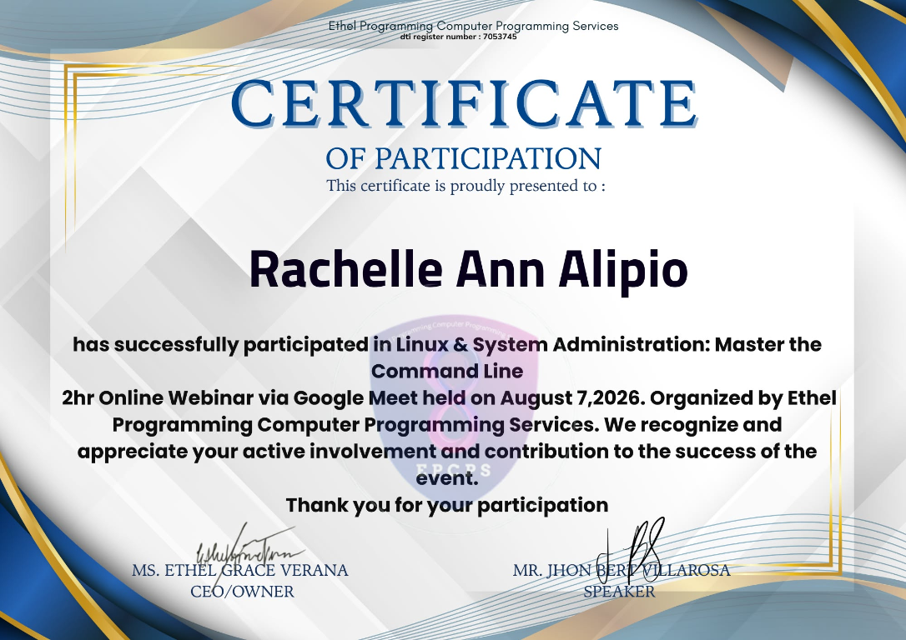
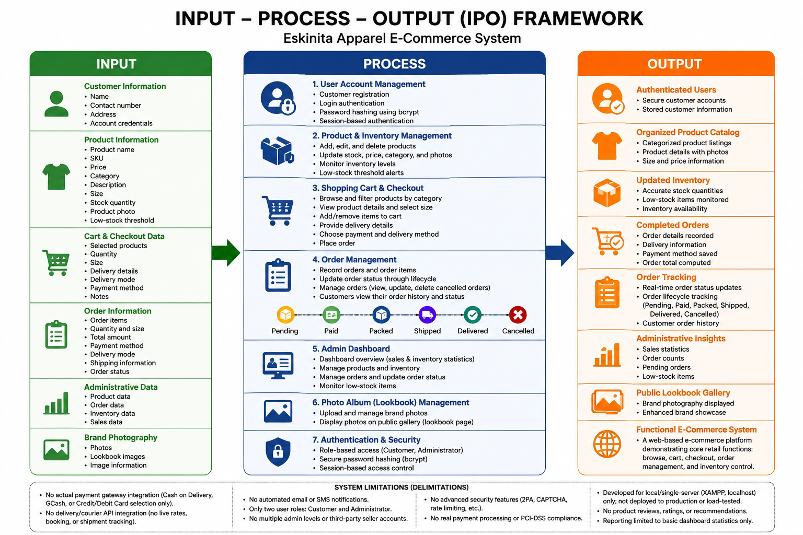
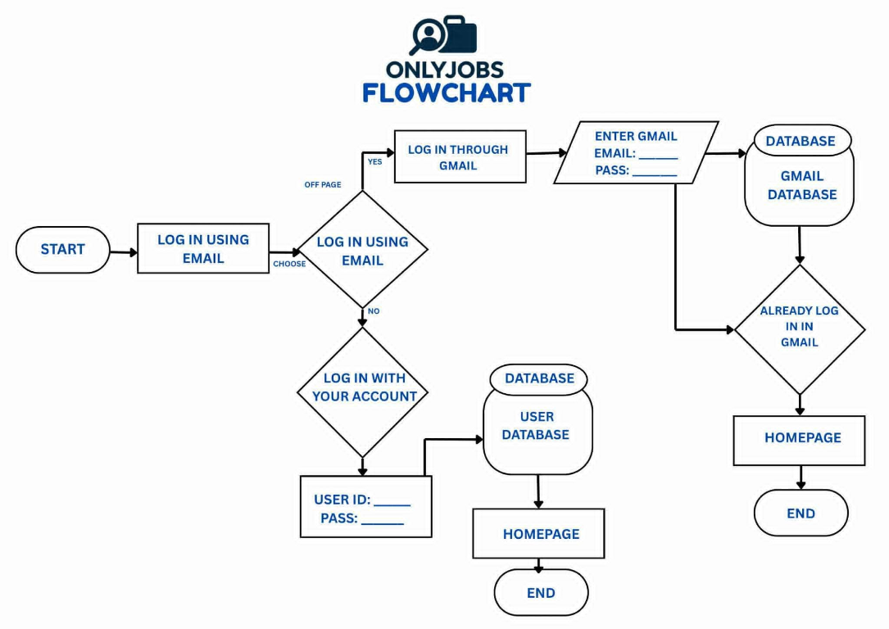
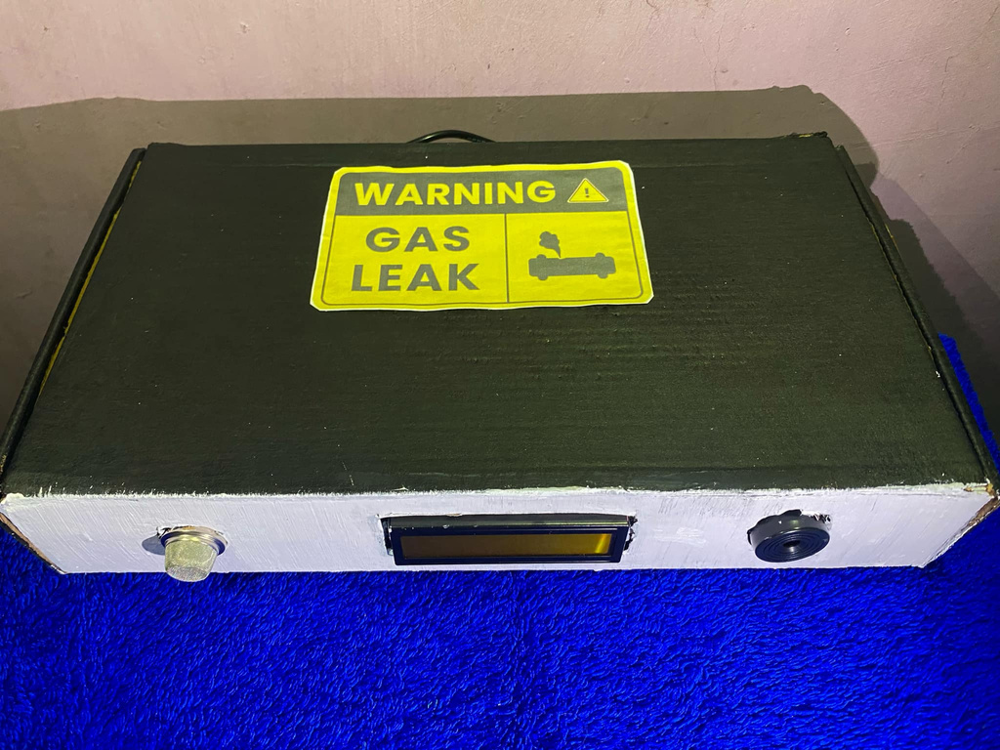
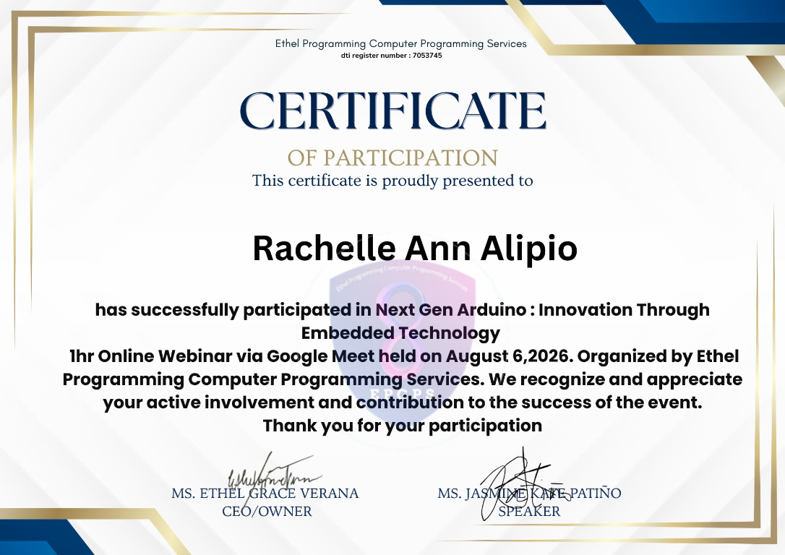
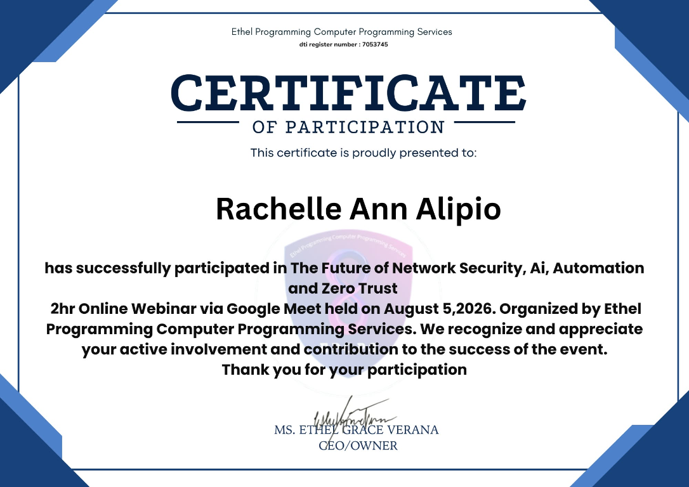
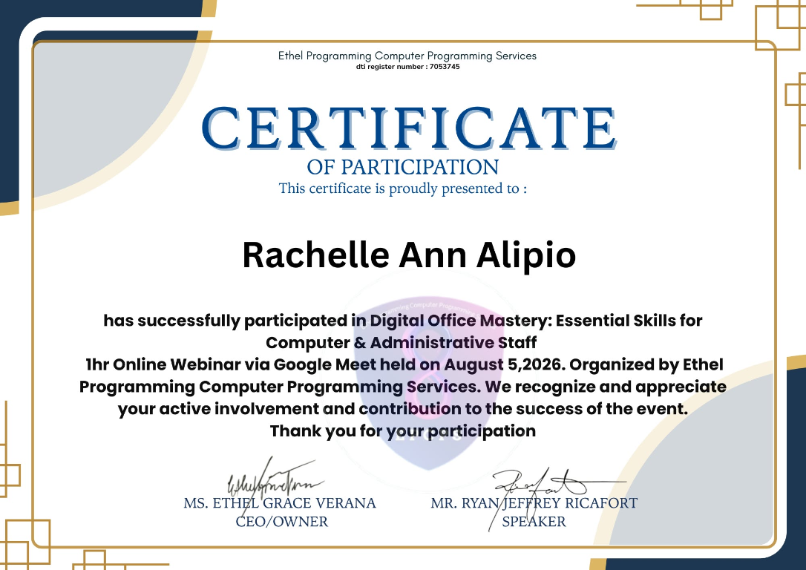
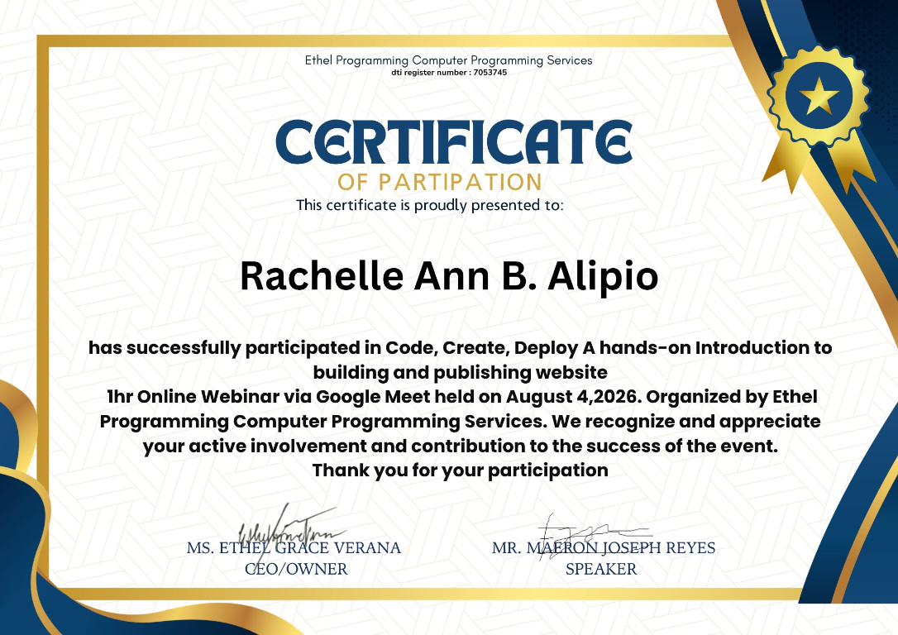

Linux & System Administration: Master the Command Line
Ethel Programming Computer Programming Services · August 7, 2026
BSIT graduate preparing for an entry-level IT Support / Help Desk or Computer Technician Trainee role. My current skills include basic computer maintenance, Windows installation, hardware and software troubleshooting, Wi-Fi support, and Microsoft Office applications.
Who I am, what I know, and where I'm going.
I am a BSIT graduate from Datamex College of Saint Adeline preparing for an entry-level IT Support, Help Desk, or Computer Technician Trainee role. My current skills include basic laptop maintenance, Windows 10/11 installation, software setup and updates, and troubleshooting common computer and Wi-Fi issues. I also have beginner experience with Excel, Word, and PowerPoint. I enjoy helping users work through technical problems, and I am continuing to build my skills through practice.
“As a BSIT graduate, I bring beginner-level, hands-on skills in laptop maintenance and computer troubleshooting, Windows 10/11 installation, software installation and updates, basic Wi-Fi troubleshooting, and Microsoft Excel, Word, and PowerPoint. I am seeking an entry-level IT Support, Help Desk, or Computer Technician Trainee role where I can use these skills to assist users, resolve common technical issues, and continue learning.”
Career focus: IT Support / Help DeskHonest levels, with evidence. Filter by area.
| Area | Skill | Level | Evidence / Project |
|---|
Selected academic projects, system documentation, and design work.
BSIT capstone documentation for an inventory management and online ordering system for a local streetwear business.
System DocumentationInventoryOnline Ordering
Download System DocumentationFlowchart showing the email and Gmail login choices, account checks, database paths, and homepage flow.
System FlowchartAuthentication
Open FlowchartTeam prototype documented with an Arduino Uno, MQ-5 gas sensor, LCD, and buzzer, including assembly, testing, and troubleshooting.
Arduino UnoMQ-5 SensorLCDBuzzer
Download Project PresentationPractice scenarios connected to my current skills in basic networking, Windows installation, computer maintenance, software support, and Office applications. These are troubleshooting examples, not claims of completed client cases.
How my current technical skills connect to the entry-level IT Support roles I am preparing for.
Entry-level IT Support, Help Desk, or Computer Technician Trainee. I can assist with basic computer setup, Windows installation, application installation and updates, and common laptop or Wi-Fi troubleshooting.
Practice Windows installation, computer maintenance, and common software troubleshooting; strengthen my basic Wi-Fi and networking knowledge.
Apply my current skills in an entry-level support role, document the issues I encounter, and learn the team's tools and escalation process.
Build on hands-on support experience to handle a wider range of hardware, Windows, application, and network issues with increasing independence.
A recorded group mock IT job interview with my classmates. We took turns as interviewer and applicant. I interviewed in the second round, then answered questions about introducing myself, why I chose BSIT, my strongest IT skills, and an area I am working to improve.
Watch the interview video on Google DriveOne-page IT resume.
Name · Title · Contact · Summary · Skills · Education · Projects · Certifications.
DOWNLOAD RESUME (PDF)Webinars and training certificates. Select an image to view it full size.

Ethel Programming Computer Programming Services · August 7, 2026

Ethel Programming Computer Programming Services · August 6, 2026

Ethel Programming Computer Programming Services · August 5, 2026

Ethel Programming Computer Programming Services · August 5, 2026

Ethel Programming Computer Programming Services · August 4, 2026
Visit my project repositories or professional profile.
Find my portfolio projects, technical documentation, and professional profile.
VISIT MY GITHUB VISIT MY LINKEDINReplace your-linkedin-username in the LinkedIn links with your profile username.
rachellealipio13@gmail.com . Email
rachellealipio13@gmail.com · GitHub
reshuloxd13@gmail.com ·LinkedIn
Contact: 09462573397
location:Paranaque City
500–800 words.
Before BSIT, I only knew how to use a computer for school work. I took TVL-ICT in senior high school, so I knew a little about computer parts.
In BSIT, I learned how to fix simple computer problems, how the internet and Wi-Fi work, and how to install Windows. I also learned how to make a simple website. The most important thing I learned is to fix a problem step by step and not to panic. The project that taught me the most was this portfolio website. I learned how to organize my work and show my skills. The hardest part for me was fixing errors when something did not work. I learned to be patient and try again. My skills have improved, but I am still a beginner. I want to get better at networking and at repairing computers. I also want to be more confident when helping other people with their computer problems. I want to become a good IT Support staff who is helpful, patient, and reliable. I am ready to start my career because I have the basic skills and I am willing to keep learning.